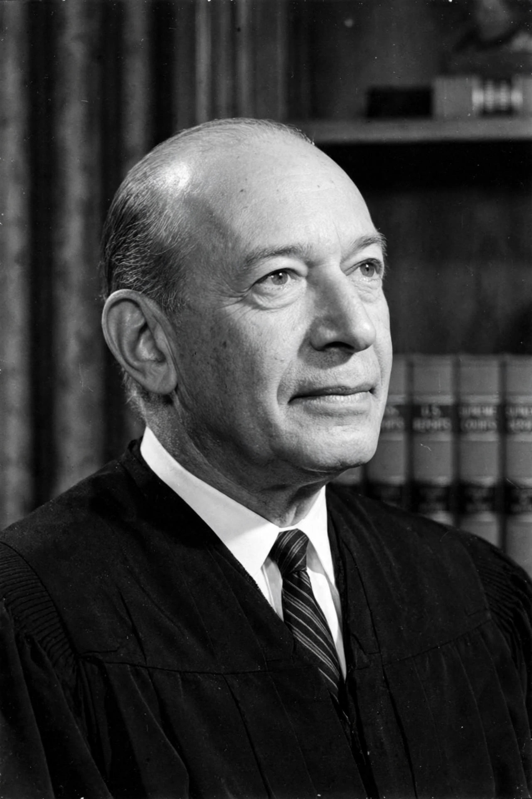

| Born | 19 June 1910 Memphis, Tennessee |
|---|---|
| Died | 5 April 1982 (aged 71) Washington, D.C. |
| Office | Associate Justice of the U.S. Supreme Court (1965–1969) |
| Appointed by | Lyndon B. Johnson |
| Education | Rhodes College; Yale Law School |
| Spouse | Carolyn Agger (m. 1935) |
Abraham Fortas (June 19, 1910 – April 5, 1982) was an American lawyer and jurist who served as an associate justice of the Supreme Court of the United States from 1965 to 1969. A longtime confidant of President Lyndon B. Johnson, Fortas authored landmark opinions on the rights of juveniles and students, but his career on the Court ended in controversy: his nomination as chief justice was blocked in the Senate in 1968, and he resigned the following year amid an ethics scandal, the first justice to do so under such circumstances.
Fortas was born in Memphis, Tennessee, the son of Jewish immigrants from Britain, and worked his way through Southwestern College (now Rhodes College) and Yale Law School, where he graduated first in his class and came under the influence of William O. Douglas. He held a series of New Deal posts, including in the Agricultural Adjustment Administration and the Department of the Interior under Harold Ickes, where he became Undersecretary of the Interior. In 1946 he co-founded the Washington law firm that became Arnold & Porter.
Fortas maintained a celebrated litigation practice. Most famously, he represented Clarence Earl Gideon before the Supreme Court in Gideon v. Wainwright (1963), in which the Court unanimously held that states must provide counsel to indigent criminal defendants. He was also a trusted adviser to Lyndon B. Johnson, defending Johnson's contested 1948 Senate primary victory in court.
Johnson nominated Fortas to succeed Arthur Goldberg in 1965. On the Court he was a consistent liberal vote. He wrote the majority opinion in In re Gault (1967), which extended due process rights — notice, counsel, confrontation and the privilege against self-incrimination — to juveniles in delinquency proceedings, and in Tinker v. Des Moines (1969), which upheld students' free-speech right to wear black armbands protesting the Vietnam War ("students do not shed their constitutional rights at the schoolhouse gate"). He dissented in cases limiting Warren Court criminal-procedure reforms and continued privately advising Johnson while on the bench, a practice later widely criticised.
In 1968, when Chief Justice Earl Warren announced his retirement, Johnson nominated Fortas to succeed him. The nomination met fierce opposition: senators objected to Fortas's closeness to Johnson, his liberal rulings, and revelations that he had accepted a $15,000 fee for university seminars funded by business associates. A filibuster — the first directed against a chief justice nominee — blocked a confirmation vote, and Fortas asked Johnson to withdraw the nomination in October 1968.
In May 1969, Life magazine revealed that Fortas had accepted a $20,000 annual retainer from a charitable foundation associated with financier Louis Wolfson, then under federal investigation and later imprisoned. Facing impeachment pressure, Fortas resigned from the Court on 14 May 1969. He returned to private practice in Washington, though his former firm declined to readmit him, and he practised until his death in 1982.
From Wikipedia, the free encyclopedia.